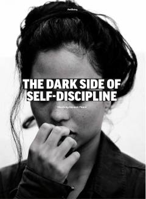

TDHaddan tashqari intizom o'rniga o'ziga rahm-shafqatli bo'lish muvaffaqiyat va baxt kalitidir.
Ushbu maqola haddan tashqari qat'iy o'z-o'zini intizomga solishning ruhiy salomatlikka salbiy ta'sirlarini tahlil qiladi. Muallif o'z-o'zini tanqid qilish o'rniga o'ziga rahm-shafqatli bo'lish muvaffaqiyat va ichki xotirjamlikka erishishning samaraliroq yo'li ekanligini tushuntiradi.